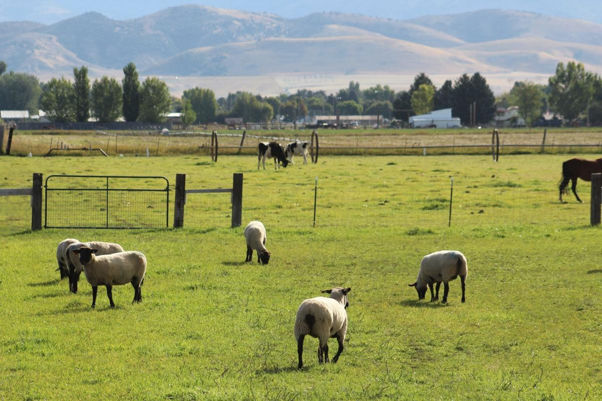

Loosened animal rights proposed in Preston City
By Necia P. Seamons
Preston City’s planning and zoning commission approved a building plan for multiple housing units submitted for Country Haven Homestead at 314 West First North. The approval is for a plan that allows 20 units to be built on the lot and leaves 40 percent of the area as green space. Commissioners David Cole, Steve Call and Fred Titensor agreed that the plan is congruent with current city ordinances the city has, but Cole suggested that the city consider a cap on units per lot. “The 20 units seem a little dense on some of these lots,” he said. Following the approval, Kevin Blanche made a request that the city purchase a lot he owns because the city is retaining a right to extend Fifth South through the lot in the event future development of the area necessitates it. “We bought a piece of property with the understanding that Fifth south would not be on our property. I was then denied a building permit, for the road. ...the City decided to move road onto my property because of existing buildings on other property. I may not have purchased it if I thought there would be a road on it,” said Blanche. Because the right-of-way for the road takes a portion of his half-acre lot, he lost out on a sale, he said. The buyer wanted a half-acre lot. The commission denied the suggestion, citing future needs of the city. Discussion centered on the fact the former owner, the realtor nor the neighbors of the lot knew that the city had moved the right of way from Blanche’s neighbors’ lot to his because of structures now standing on the neighbor’s lots. “There is not a hard fact of where any road is going to be in the city. (AA) Hudson made a plan, but it has never been accepted by the city. Since before I was here, I’ve seen several roads shift up or down,” said city engineer Tyrell Simpson. “The major street plan was accepted by the city council last year. It doesn’t show roads, just proposed roads.” “My proposal is that if the city wants to take some land, they can buy the whole thing,” said Blanche. “This sounds like an eminent domain situation. This road was not on my property, but it is being forced upon it. There is no documentation saying the road would be on this property. There are no structures on the property, so the city won’t have to deal with it.” Blanche agreed that the city needs to maintain the right to build roads.